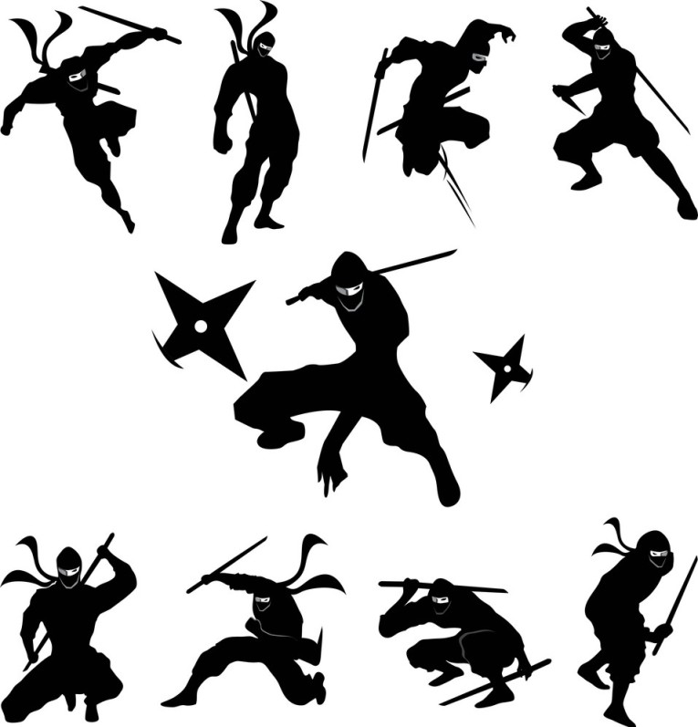

|
Ninjutsu (忍術, English TV: Ninja Art, literally meaning: Ninja Techniques) is one of the three main jutsu categories. Most ninjutsu use shape transformation, which deals with controlling the form and movement of the ninjutsu, Ninjutsu is humans' corrupted use of the Sage of the Six Paths' ninshū originally created by his son, Indra; |
 |
The simultaneous use of ninjutsu and taijutsu is called "nintaijutsu".
Gengetsu Hōzuki's Steaming Danger Tyranny is classified as an "infinite explosion ninjutsu" (無限爆破忍術, mugen bakuha ninjutsu, literally meaning: infinite explosion ninja technique).
The Fourth Databook describes Sage Art: Super Tailed Beast Rasenshuriken as "the most marvellous ninjutsu of all time".